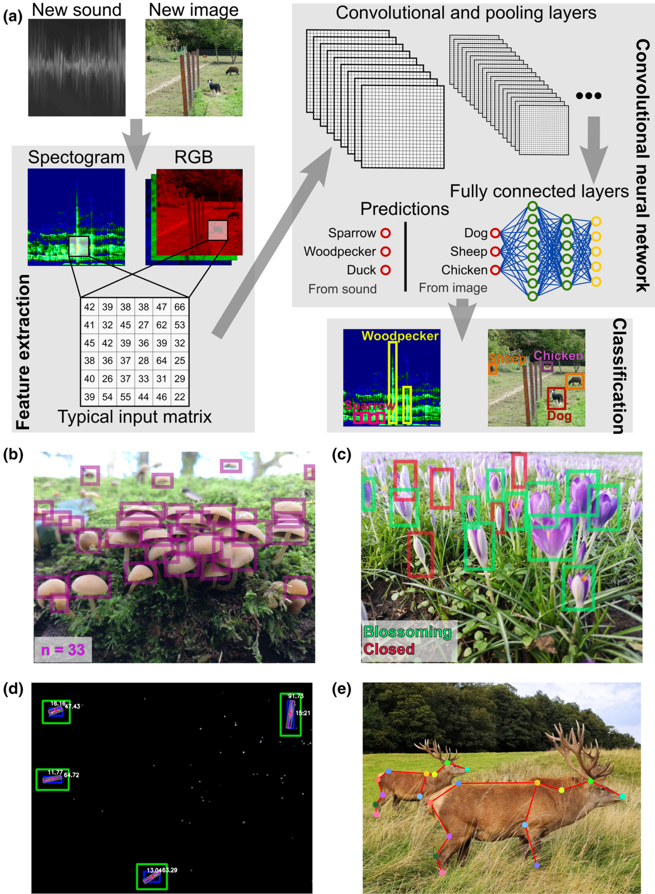
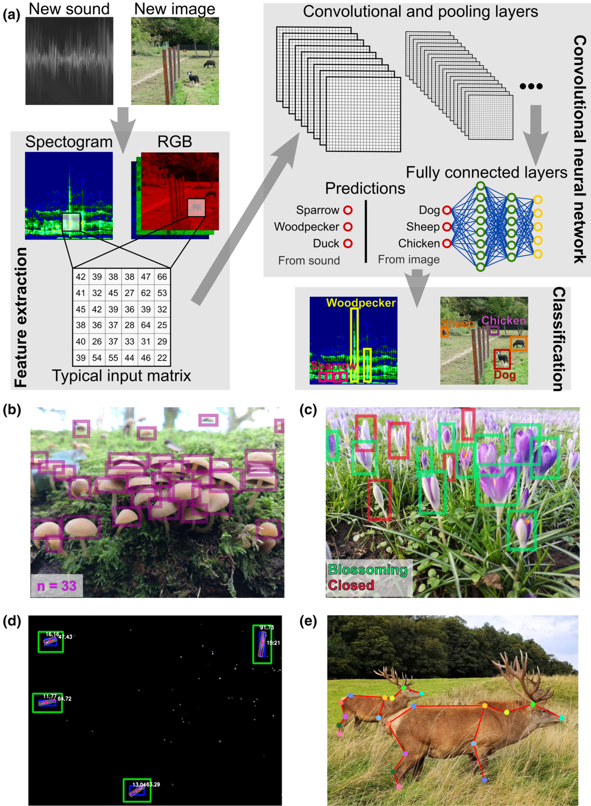

[1] 12Linguagem R para manipulação e visualização de dados
1 de novembro de 2022
Maurício Vancine
Material
Todo o material está disponível no GitHub

IMPORTANTE!!!
Estamos num espaço seguro e amigável
Sintam-se à vontade para me interromper e tirar dúvidas

Análises Ecológicas no R (2022)

15 capítulos: linguagem R, tidyverse, perguntas em ecologia, análises univariadas, multivariadas e geoespaciais
Mas não foi fácil… E ainda não é…

Definição
O R é uma linguagem de programação livre (open source), direcionada à manipulação, análise e visualização de dados, com diversas expansões (pacotes) para o uso de dados com formatos específicos
Histórico - Linguagem S
John M. Chambers (Stanford University, CA, EUA)
Versões
- Old S (1976-1987)
- New S (1988-1997)
- S4 (1998)
IDE (Integrated Development Environment)
- Interface: S-PLUS (1988-2008)

Histórico - Linguagem R
Robert Gentleman e Ross Ihaka (Auckland University, NZ)
Versões
- Desenvolvimento (1997-2000)
- Versão 1 (2000-2004)
- Versão 2 (2004-2013)
- Versão 3 (2013-2020)
- Versão 4 (2020-atual)
IDE (Integrated Development Environment)
- Interface: RStudio (2011-atual)
- Atualmente: R Core Team

Histórico - Linguagem R


Aplicações
Manipulação, visualização e análise de dados
- Estatísticas univariadas e multivariadas
- Análises de dados ecológicos
- Análise de dados espaciais, temporais e sonoros
- Análise de dados funcionais, genéticos e filogenéticos
- Análise de dados geoespaciais e sensoriamento remoto
- Visualização de todos os tipos de dados anteriores
R Markdown e quarto
- Textos em HTML, PDF, Word, ODT, Markdown
- Slides, Websites, Blogs, Livros e Artigos
- Shiny


IDE
Ambiente de Desenvolvimento Integrado (Integrated Development Environment)
IDE
Ambiente de Desenvolvimento Integrado (Integrated Development Environment)


Interface

Janelas e abas
1. Editor/Script: é onde escrevemos nossos códigos em R ou R Markdown
2. Console: é onde os códigos são rodados e vemos as saídas
3. Environment: painel com todos os objetos criados na sessão
3. History: painel com o histórico dos códigos rodados
3. Connection: painel para conectar banco de dados
3. Git: painel do controle de versão
3. Tutorial: painel de tutoriais
4. Files: painel que mostra os arquivos no diretório de trabalho
4. Plots: painel onde os gráficos são apresentados
4. Packages: painel que lista os pacotes
4. Help: painel onde a documentação das funções é exibida
4. Viewer: painel de visualização
Projeto R (.Rproj)
- Facilita o trabalho em múltiplos ambientes
- Cada projeto possui seu diretório, documentos e workspace
- Permite controle de versão (git e GitHub)
Conferindo os computadores

Console
O console é onde a linguagem R instalada é carregada para executar os códigos


Script
Onde os códigos são escritos e salvos no formato .R
- Atalho:
ctrl + shift + N

Script
Salvar um script
- Atalho:
ctrl + S

Objetos
Palavras que atribuímos (guardamos) dados possibilitando sua manipulação
Atribuição (<-)
palavra <- dados
Atalho:
alt + -


Objetos
Ambiente (Environment)
Os objetos podem ser visualizados no painel Environment
Funções
Códigos que realizam operações em argumentos
- Estrutura de uma função:
nome_da_funcao(argumento1, argumento2)
- Nome da função: remete ao que ela faz (inglês)
- Parênteses: limitam a função
- Argumentos: onde a função atuará
- Vírgulas: separam os argumentos

Ajuda
Descreve as informações de uma função

Description: descrição da função
Usage: uso da função e argumentos
Arguments: argumentos e suas especificações
Details: detalhes da função
Value: interpretar a saída (output)
Note: notas sobre a função
Authors: autores da função
References: referências bibliográficas da função
See also: funções relacionadas
Examples: exemplos do uso da função
Pacotes
Conjunto de funções extras para executar tarefas específicas

Pacotes
Duas fontes
- CRAN (Comprehensive R Archive Network)
- GitHub (Repositório de códigos)


Help me help you: um bestiário para entender erros e pedir ajuda no R

Principais erros
Cases

Modo dos objetos (mode)
A natureza dos elementos definirá os modos dos objetos

Estrutura dos objetos (class)
Organização dos elementos dos objetos

Estrutura dos objetos (class)
Vector
Sequência de valores que representam uma variável contínua ou descrição textual
[1] 1 2 3[1] "amostra1" "amostra2" "amostra3"[1] 1 3 5 7 9[1] 42 42 42 42 42[1] "amostra 1" "amostra 2" "amostra 3"[1] 51 52 48 2 29 44Estrutura dos objetos (class)
Matrix
Representa os dados no formato de tabela, com linhas (locais) e colunas (variáveis)
Estrutura dos objetos (class)
Array
Combinação de tabelas, com linhas (locais), colunas (variáveis) e dimensões (tempo)
Estrutura dos objetos (class)
List
Tipo especial de vetor que aceita objetos como elementos
Estrutura dos objetos (class)
Data frame
Representa os dados no formato de tabela, com linhas e colunas, mas misturando modos

Ciência de dados para ecólogos
(Data Science for Ecologists)

Environmental Data Science

Monitoramento automatizado
 

Fluxo de trabalho

Pacotes

Artigos
Wickham, Hadley. “Tidy data.” Journal of Statistical Software 59.10 (2014): 1-23.
Wickham, Hadley, et al. “Welcome to the Tidyverse.” Journal of Open Source Software 4.43 (2019): 1686.

Livro

Site


Sintaxe
Todas as funções dos pacotes tidyverse usam fonte minúscula e _ para separar os nomes internos das funções (snake_case)
read_csv()
read_xlsx()
as_tibble()
left_join()
group_by()


Importar dados
ATLANTIC AMPHIBIANS: a dataset of amphibian communities from the Atlantic Forests of South America


René Magritte (1898-1967)
Artista surrealista belga
“Ceci n’est pas une pipe”
Isso não é um cachimbo


Função composta
Função composta no R


pipe
Sem pipe
Com pipe


palmerpenguins
Dados de medidas de pinguins chamados
palmerpenguinsDados coletados e disponibilizados pela Dra. Kristen Gorman e pela Palmer Station, Antarctica LTER, membro da Long Term Ecological Research Network
Dois conjuntos de dados:
penguins_raw(dados brutos)penguins(versão simplificada)

palmerpenguins

palmerpenguins

Descrição
Funções para tornar um conjunto de dados tidy (organizados), facilitando a manipulação, modelagem e visualização
Um conjunto de dados é condiderando tidy quando:
- Cada variável está em uma coluna
- Cada observação está em uma linha
- Cada valor está em uma célula

Funções


Descrição
Funções que facilitam a manipulação de dados


Como mentir com estatística?


palmerpenguins


ggplot2
Integrado ao
tidyverse, possui uma sintaxe própria de camadas (layers)Necessita de funções específicas para objetos de classes diferentes
Funções:

Descrição
Wilkinson (2005) Grammar of Graphics: representação gráfica dos dados a partir de atributos estéticos (do inglês aesthetic)


Camadas (layers)

ggplot2
Wickham (2008) criou o pacote ggplot2, onde “gg” representa a contração de Grammar of Graphics


Elementos de um gráfico
Representações das colunas (eixos) e linhas (elementos)

Tipos de variáveis


Tipos de variáveis e tipos gráficos

Tipos de variáveis e tipos gráficos

R CHARTS

Histograma (Histogram)
Representa dados de uma coluna
Dados do tipo discreto ou contínuo
Distribuição de frequência ou densidade


Histograma (Histogram)


Histograma (Histogram)

Densidade (Density)

Densidade (Density)


Histograma (Histogram)
graphics

Histograma (Histogram)
graphics

Densidade (Density)
graphics
par(mar = c(5, 5, 5, 5))
hist(penguins$flipper_length_mm,
col = "gray50",
border = "gray",
main = "Comprimento da nadadeira dos penguins",
xlab = "Comprimento da nadadeira (mm)",
ylab = "Densidade",
br = 50,
cex.main = 2,
cex.lab = 2,
cex.axis = 1.5,
prob = TRUE)
lines(density(na.omit(penguins$flipper_length_mm)))
Histograma (Histogram)
ggplot2

Histograma (Histogram)
ggplot2

Histograma (Histogram)
ggplot2
ggplot(data = penguins,
aes(x = flipper_length_mm, fill = species)) +
geom_histogram(alpha = .5, position = "identity") +
scale_fill_manual(values = c("darkorange", "darkorchid", "cyan4")) +
labs(title = "Comprimento da nadadeira dos penguins",
fill = "Espécies",
x = "Comprimento da nadadeira (mm)",
y = "Frequência") +
theme_bw(base_size = 20)
Histograma (Histogram)
ggplot2
ggplot(data = penguins,
aes(x = flipper_length_mm, fill = species)) +
geom_histogram() +
scale_fill_manual(values = c("darkorange", "darkorchid", "cyan4")) +
facet_grid(species ~ .) +
labs(title = "Comprimento da nadadeira dos penguins",
fill = "Espécies",
x = "Comprimento da nadadeira (mm)",
y = "Frequência") +
theme_bw(base_size = 20)
Densidade (Density)
ggplot2

Histograma (Histogram)
ggpubr

Densidade (Density)
ggpubr

Gráfico de setores (Pie chart)
Representa dados de uma coluna
Dados do tipo categórico
Proporção ou porcentagem de dados categóricos

Gráfico de setores (Pie chart)
graphic

Gráfico de setores (Pie chart)
graphic

Gráfico de setores (Pie chart)
ggplot2
ggplot(data = penguins_prop,
aes(x = "", y = prop, fill = species)) +
geom_bar(stat = "identity", color = "white") +
coord_polar("y", start = 0) +
geom_text(aes(label = paste0(prop, "%")), color = "white",
position = position_stack(vjust = .5), size = 8) +
scale_fill_manual(values = c("darkorange", "purple", "cyan4")) +
theme_void() +
labs(fill = "Espécie")
Gráfico de setores (Pie chart)
ggpubr

Gráfico de setores (Donut chart)
Representa dados de uma coluna
Dados do tipo categórico
Proporção ou porcentagem de dados categóricos

Gráfico de setores (Donut chart)
ggpubr

Gráfico de barras (Bar plot)
Representa dados de duas colunas
Dados do tipo categóricos: X = categórico e Y = categórico
Resume dados de contagens para uma coluna

Gráfico de barras (Bar plot)
ggpubr
ggbarplot(penguins_count,
x = "species",
y = "n",
fill = "species",
color = "species",
palette = c("darkorange", "purple", "cyan4"),
label = TRUE,
lab.pos = "in",
lab.col = "white",
lab.size = 8,
main = "Número de indivíduos coletados por espécie",
xlab = "Espécies",
ylab = "Frequência absoluta",
legend = "none")
Gráfico de caixas (Box plot)
Representa dados de duas colunas
Dados do tipo categóricos: X = categórico e Y = contínuo
Resume informações de medidas contínuas para dois ou mais fatores categóricos

Gráfico de caixas (Box plot)
Intervalo inter-quartil (interquartile range - IQR)
Limite inferior e limite superipor (1.5 x IQR)
Valores exteriores (outliers)


Gráfico de caixas (Box plot)


Gráfico de caixas (Box plot)


Gráfico de caixas (Box plot)


Gráfico de caixas (Box plot)

Gráfico de caixas (Box plot)

Gráfico de caixas (Box plot)

Gráfico de caixas (Box plot)
graphics

Gráfico de caixas (Violin plot)
ggplot2
ggplot(data = penguins,
aes(x = species, y = flipper_length_mm, fill = species)) +
geom_violin(width = .3,
show.legend = FALSE) +
geom_jitter(alpha = .5,
show.legend = FALSE,
position = position_jitter(width = .1, seed = 0)) +
scale_fill_manual(values = c("darkorange", "purple", "cyan4")) +
theme_bw(base_size = 15) +
labs(title = "Pontos com jitter", x = "Species", y = "Flipper length (mm)")
Gráfico de caixas (Violin plot)
ggpubr

Gráfico de dispersão (Scatter plot)
Representa dados de duas colunas
Dados do tipo categóricos: X = contínuo e Y = contínuo
Plota a relação entre duas variáveis contínuas

Gráfico de dispersão (Scatter plot)
ggplot2
ggplot(data = penguins,
aes(x = bill_length_mm,
y = bill_depth_mm,
color = species,
shape = species)) +
geom_point(size = 3, alpha = .8) +
geom_smooth(method = "lm", se = FALSE) +
scale_shape_manual(values = c(19, 15, 17)) +
scale_color_manual(values = c("darkorange", "purple", "cyan4")) +
theme_bw(base_size = 15) +
labs(x = "Comprimento do bico (mm)",
y = "Profundidade do bico (mm)",
color = "Espécies", shape = "Espécies")
Gráfico de dispersão (Scatter plot)
Same Stats, Different Graphs: Generating Datasets with Varied Appearance and Identical Statistics through Simulated Annealing
Justin Matejka, George Fitzmaurice

Gráfico de dispersão (Scatter plot)
ggpubr

Gráfico de dispersão (Scatter plot)
ggpubr

Gráfico pareado (Pairs plot)
Representa dados de duas colunas
Dados do tipo categóricos: X = contínuo e Y = contínuo
Plota a relação entre duas variáveis contínuas, mas para várias colunas

Gráfico pareado (Pairs plot)
GGally

Descrição
Muitas vezes precisamos combinar gráficos para representar nossos dados
Essa tarefa pode ser realizada depois da criação dos gráficos em aplicativos como Inkskape ou GIMP
Outras vezes, podemos usar códigos e pacotes do R para fazer essa tarefa

Combinando gráficos
graphics
par(mfrow = c(2, 1))
boxplot(flipper_length_mm ~ as.factor(species),
data = penguins,
col = c("darkorange", "purple", "cyan4"),
main = "Espécies por amostragens",
xlab = "Espécies",
ylab = "Comprimento da nadadeira (mm)",
cex.main = 1.5, cex.lab = 1.3, cex.axis = 1.2)
plot(bill_depth_mm ~ bill_length_mm,
data = penguins,
pch = 20,
cex = 1.5,
main = "Comprimento e profundidade do bico",
xlab = "Comprimento do bico (mm)",
ylab = "Profundidade do bico (mm)",
cex.lab = 1.5, cex.axis = 1.3)
Combinando gráficos
ggplot2
ggplot_boxplot <- ggplot(data = penguins,
aes(x = species, y = flipper_length_mm, fill = species)) +
geom_boxplot(width = .3,
show.legend = FALSE) +
geom_jitter(alpha = .5,
show.legend = FALSE,
position = position_jitter(width = .1, seed = 0)) +
scale_fill_manual(values = c("darkorange", "purple", "cyan4")) +
theme_bw(base_size = 15) +
labs(x = "Species", y = "Flipper length (mm)")
ggplot_boxplot
Combinando gráficos
ggplot2
ggplot_scatterplot <- ggplot(data = penguins,
aes(x = bill_length_mm,
y = bill_depth_mm,
color = species,
shape = species)) +
geom_point(size = 3, alpha = .8) +
scale_shape_manual(values = c(19, 15, 17)) +
scale_color_manual(values = c("darkorange", "purple", "cyan4")) +
theme_bw(base_size = 15) +
labs(x = "Comprimento do bico (mm)",
y = "Profundidade do bico (mm)",
color = "Espécies", shape = "Espécies")
ggplot_scatterplot

Combinando gráficos
cowplot


Gráficos usando interface
esquisse

Muito obrigado!